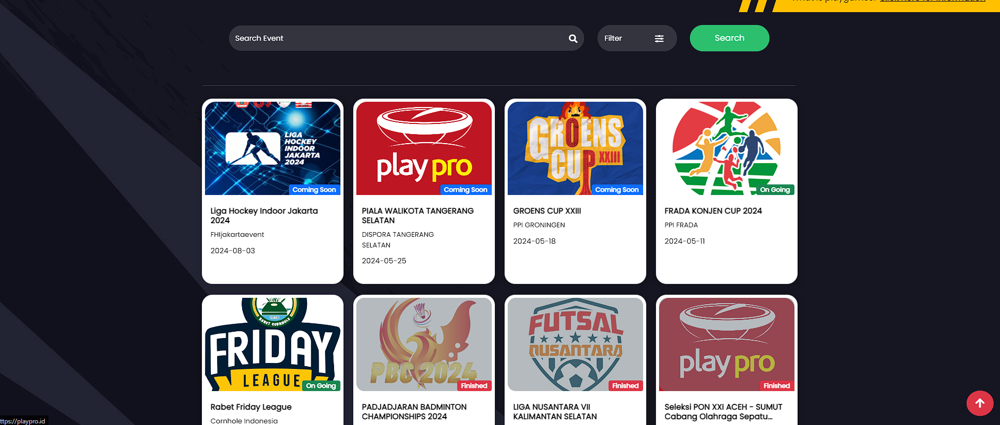

Homepage Of Playpro
Website yang terdiri dari beberapa fitur seperti marketplace untuk berlangganan course olahraga, serta untuk membuat sebuah Game Management System

PlayGames : Fitur yang berfungsi sebagai digitalisasi sistem manajemen pertandingan olahraga Fungsi PlayGames : Event management: Membuat, mengelola, hingga memantau event yang sudah terintegrasi dalam 1 sistem Registration & Payment: Melakukan pendaftaran dan pembayaran Result: Melihat hasil pertandingan secara real time atau live delayed Schedule & Meet Management: Dapat membuat jadwal pertandingan sendiri Media/Content Management System: Mengelola media/konten event What’s on Playgames(Fitur) : Live Score: Dapat dioperasikan sebagai controller untuk mengupdate score secara real time tanpa menggunakan kertas atau score sheet Home: Berisi rangkuman event secara menyeluruh (Banner, Schedule & Result, Klasemen/Medals, Gallery, News dan Sponsor) Schedule: Dapat digunakan untuk membuat jadwal pertandingan yang dapat dilihat dan diupdate Results: Dapat digunakan untuk update hasil pertandingan News: Dapat digunakan untuk update berita mengenai event dan menjadi media beriklan bagi sponsor Gallery: Dapat digunakan sebagai penyimpanan dokumentasi event About Us: Definisi mengenai event QR Code: Dapat digunakan sebagai daftar kehadiran peserta dalam sebuah pertandingan, juga dapat digunakan sebagai tanda pengenal ID Card: Penyelenggara event dapat lebih mudah membuat tanda pengenal bagi setiap peserta dan official E-Certificate: Bagi para peserta maupun pemenang dapat mendownload E-Certificate sendiri pada website playpro.id.
